Presenza del MiG-23
Luogo comune: nessun aereo si trovava nella scia dell'IH870.
Motivazione: la presenza nella scena del caccia intruso farebbe parte di un depistaggio e di un complotto contro la NATO.
INDICE
Traccia LE011
Questa traccia viene attribuita dai periti d'ufficio alla missione d'addestramento MIX 433 ("volo di addestramento di una coppia di F104 atterrati in sequenza a Grosseto.", v. "Capitolo LXXXVII - Perizia radaristica Dalle Mese ed altri - 16.06.97" a pag. 248).
Siccome l'esatta identificazione di questa traccia è di fondamentale importanza per la comprensione dei fatti accaduti intorno all'IH870, in questo paragrafo ne viene analizzato il comportamento in relazione alle radioassistenze; analisi completamente tralasciata dai periti.
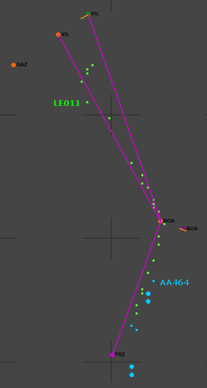
La cartina mostra la LE011 di colore verde e la AA464 in azzurro. I quattro plot più grandi con forma circolare sono quelli con SIF2 = 7777.
La proiezione geografica usata è quella
equirettangolare. Ciò consente di amplificare la longitudine rispetto alla latitudine (si noti lo schiacciamento delle crocette ampie 10 x 10 nm) con l'unico scopo di distanziare meglio i due segmenti che congiungono l'NDB di Bologna con le due radioassistenze di Villafranca.
Le tre crocette interamente visibili si trovano lungo il meridiano 11° E.
Sebbene la traccia verde possa rappresentare il volo d'addestramento di ritorno da Villafranca, per orario, direzione e velocità, la cartina mostra una cosa assolutamente insolita per un TF-104G (come anche per un F-104S e per vari altri caccia NATO): si può osservare chiaramente che l'aereo sta seguendo una rotta basata su NDB.
È altrettanto evidente che non sta seguendo la rotta basata sul TACAN, cosa insolita per un aereo NATO, ma giustificata dal fatto che "
il Tacan di Villafranca è in avaria già da una settimana buona" (v. "
TITOLO 2 - L’istruttoria dal 27 luglio 90 al 31 dicembre 97.", pag. 486).
L'evidenza che rende estremamente improbabile (se non impossibile) che la LE011 rappresenti un TF-104G la si può avere consultando il manuale di volo di questo aereo, scaricabile dal sito
Starfighters.it, dal quale emerge l'assenza della necessaria strumentazione per ricevere gli NDB.
Ulteriori documenti degni di nota sono presenti nella pagina "
Technical data", dove è possibile consultare, tra gli altri, il documento "
F-104 Electronic Systems" nel quale non c'è traccia di
ADF né di altro apparato che possa lasciar anche solo ipotizzare la possibilità di ricezione degli NDB.
In linea del tutto teorica, un TF-104G avrebbe potuto seguire una rotta basata su NDB grazie alla presenza dell'
INS tra gli apparati di bordo; sarebbe bastato caricare le coordinate delle radioassistenze nella memoria dell'INS e usare questo per dirigersi verso la radioassistenza voluta. Pur essendo un'ipotesi valida dal punto di vista teorico, all'atto pratico sarebbe stata una cosa completamente priva di senso, perché sarebbero state caricate le coordinate delle radioassistenze normalmente usate, cioè quelle del TACAN di Villafranca, non certo quelle degli NDB.
Se ciò non bastasse a fugare ogni dubbio, ci sono anche le conversazioni tra i controllori di Ciampino e Monte Venda a rendere evidente che l'intera navigazione doveva essere basata sulle radioassistenze e non sull'INS.
Avendo appurato che si può escludere con certezza quasi assoluta che la LE011 possa rappresentare un TF-104G, è ora possibile ragionare senza preconcetti sull'argomento d'interesse in questa pagina: LE011 è compatibile con un MiG-23?
La traccia mostra un jet che inizialmente proviene da nord-est a velocità moderata e intercetta un ben preciso rilevamento dall'NDB di Villafranca che lo porta sull'NDB di Bologna. Ciò è perfettamente compatibile con un MiG-23 che decolla da Villafranca per pista 05 (l'attuale 04) verso nord-est, vira subito a sud per poi virare verso sud-ovest per intercettare e seguire la rotta che congiunge i due NDB.
È ovvio che la traccia potrebbe, teoricamente, essere associata anche ad un jet civile, ma è da escludersi per vari motivi:
- l'aereo non sembra seguire alcuna particolare procedura di partenza;
- il lungo lavoro svolto dai periti d'ufficio ha solo permesso di associare la LE011 alla missione 433; è stata quindi implicitamente esclusa la presenza di qualunque traffico civile lungo quella rotta;
- l'aereo sembra intercettato da un caccia (AA464) che lo sta raggiungendo da nord con velocità di una novantina di nodi più alta; sarebbe estremamente insolita un'intercettazione di un aereo civile appena decollato da un aeroporto nel territorio nazionale;
- la traccia di un jet civile normalmente non sparisce nel nulla fondendosi con una traccia militare.
Autorizzazioni ad aerei non NATO
La presenza di un MiG-23 in un aeroporto italiano che era anche base NATO non deve destare molto scalpore, per via del cosiddetto cross-servicing.
Quest'obbligo di assistenza reciproca tra tutte le basi NATO abilitate all'erogazione del
cross-servicing era estesa anche ad aerei non NATO. Ciò è confermato dal col. Tacchio, il quale
dichiara
fonte:
A D.R.: NELL'ESTATE DELL'80 ERO COMANDANTE DEL 4^ STORMO DI BASE A GROSSETO.
A D.R.: NELL'AEREOPORTO NON ERANO STANZIATI VELIVOLI DI ALTRE AEREONAUTICHE. SI
DAVA ASSISTENZA, IL CD, CROSS-SERVICE, A VELIVOLI DI PAESI NATO. QUANDO V'ERA LA
RICHIESTA DEL
M.A.E. E L'AUTORIZZAZIONE DEL NOSTRO S.M.
SI DAVA ASSISTENZA ANCHE A VELIVOLI DI PAESI NON-NATO. SI TRATTAVA DI UNA POSSIBILITA'. PER QUANTO IO
RICORDI A GROSSETO NON S'E' MAI VERIFICATO. ESCLUDO IN MODO ASSOLUTO CHE ABBIANO
USUFRUITO DI QUESTO SERVIZIO VELIVOLI LIBICI.
L'effettivo utilizzo degli aeroporti italiani da parte di aerei militari libici per gli "scali tecnici" è concretamente provato dalla documentazione acquisita in attuazione di uno dei tanti decreti di acquisizione emessi dall'AG (v. "
WP001293_001.DOC"
fonte, fondo pag. 3):
- 15.10.93 - ACQUISIZIONE PRESSO IL SIOS AERONAUTICA - 23^ NUCLEO DI CAGLIARI -
ATTI E APPUNTI RELATIVI A RICHIESTA DI ASSISTENZA [cross-servicing, ndr]
FORMULATA DA VELIVOLI MILITARI LIBICI AD AEROPORTO SUL TERRITORIO DELLO STATO.
IL DECRETO HA AVUTO ESITO POSITIVO ESSENDO STATO RINVENUTO VARIO MATERIALE,
RELATIVO AGLI SCALI DI VELIVOLI LIBICI ED ANCHE L'INCIVOLO OCCORSO IL 18.07.80
AL MIG LIBICO SULLA SILA.
Come faceva la Libia a far entrare i suoi aerei nello spazio aereo italiano ce lo spiega l'imputato Sardu Mario, radarista di Marsala (v. "
WP000985_001"
fonte a metà pag. 6):
[...] SE ENTRAVA QUALCHE AEREO LIBICO, TUTTI GLI
AEREI DEI PAESI NON NATO AVEVAMO DEI TELEGRAMMI SEI MESI PRIMA O TRE MESI PRIMA
E C'ERANO DELLE AUTORIZZAZIONI. DIFATTI E' CAPITATO MOLTE VOLTE CHE NON ERANO
AUTORIZZATI. CONTATTAVAMO IL SETTORE E CHIEDEVAMO. IL SETTORE DICEVA "PER NOI E'
AUTORIZZATO", E ALLORA SI DAVA LA SIGLA ED ERA AUTORIZZATO. QUALCHE VOLTA NON
ERA AUTORIZZATO. ALLORA NOI TELEFONAVAMO TRAMITE L'IO A ROMA "DIGLI A
QUELL'AEREO DI TORNARE INDIETRO PERCHE' NON E' AUTORIZZATO". E TORNAVA INDIETRO.
Ciò è confermato dalla documentazione consegnata alla Commissione Parlamentare d'Inchiesta (v. "
WP000914_001"
fonte ultimo capoverso di pag. 6, ma conviene iniziare a leggere da metà pagina):
PER GLI AEREI MILITARI APPARTENENTI A PAESI DI PARTICOLARE INTERESSE O AD ALTRI PAESI [quindi non NATO, ndr],
IL RILASCIO DELL'AUTORIZZAZIONE [per il sorvolo, ndr]
ERA DI COMPETENZA DEL MINISTERO DEGLI ESTERI PREVIA AUTORIZZAZIONE TECNICO OPERATIVA DEL SIOS AERONAUTICA, TRASMESSA
ANCHE ALLE RR.AA., AGLI ENTI DI CONTROLLO DEL T.A. (RIV) E AL R.O.C. INTERESSATO PER AREA.
Quindi i caccia libici potevano sorvolare l'Italia senza problemi, bastava richiedere l'autorizzazione con sufficiente anticipo.
Tuttavia, alcune volte gli aerei libici s'intrufolavano in maniera non proprio pulita (v. "
WP001099_001"
fonte a partire dall'ultima riga di pag. 9):
SARDU: ALLORA...LEI HA DETTO GIUSTAMENTE PRIMA CHE MOLTI AEREI SI NASCONDONO
SOTTO DEGLI AEREI CIVILI, ALLORA MOLTE VOLTE SUCCEDEVA DEI LIBICI, QUANDO
SALIRONO IN ITALIA, CHE SOTTO C'ERA QUALCHE AEREO MILITARE DI LORO, E SI ANDAVA
AD ACCERTARE, ORA SE GLI AEREI MILITARI, ORA GIRA E GIRA NEL MEDITERRANEO, O IN
TUTTE LE PARTI DEL MONDO, CI SONO LE PORTAEREI, CI SONO GLI AEREI...VOLANO A
BASSA QUOTA, MICA NOI VEDIAMO TUTTO QUELLO CHE PASSA SOPRA DI NOI.
Molto significativa è anche l'ultima frase, poiché sottolinea che la presenza di un radar correttamente funzionante non implica il rilevamento di tutti i velivoli nella zona coperta, sia per l'ovvia capacità posseduta da un caccia di accodarsi agli aerei civili che, soprattutto, per una serie di motivi probabilmente sconosciuti a chi afferma che i radar dimostrerebbero l'assenza di velivoli per decine di chilometri intorno all'IH870 durante gli ultimi minuti del volo. Per tutti i dettagli riguardanti questo argomento, si rimanda alla pagina "
I radar «vedono» tutto".
Infine, a inizio pag. 11 dello stesso documento leggiamo:
LEI STESSO ADESSO CI STA DICENDO CHE
SPESSO I LIBICI RISALIVANO IN CODA, SI INOLTRAVANO SULL'AMBRA 13; LEI STESSO SA
CHE GLI AMERICANI FACEVANO UN LAVORO DI VIGILANZA PRATICAMENTE
ANDANDO...PRATICAMENTE DALLA GERMANIA, DAL NORD ITALIA, FINO AL GOLFO DELLA
SIRIA, FACEVANO UN LAVORO DI PATTUGLIAMENTO, PROPRIO COME LO CHIAMANO GLI
AMERICANI, UN LAVORO DI PARCO DEL TIRRENO, PROPRIO PERCHE'...PERHCE' C'ERANO
QUESTE PENETRAZIONI, C'ERANO PENETRAZIONI LIBICHE, C'ERANO PENETRAZIONI
SOVIETICHE. L'80 NON ERA IL 95 O 96, LA SITUAZIONE INTERNAZIONALE ERA
COMPLETAMENTE DIVERSA, NOI ABBIAMO TROVATO CARTE DEL SISMI IN CUI SI DICE CHE
C'ERA ADDIRITTURA UN CORRIDOIO ADIBITO AL TRAFFICO DEI MIG23 E 25 CHE ANDAVANO
IN IUGOSLAVIA PER RIPARAZIONE. C'ERANO DEGLI AEREI DA TRASPORTO TRASFORMATI IN
AEREI MILITARI CHE PROVENIVANO DALL'AEROPORTO DI VENEZIA, DALLE OFFICINE DI
VENEZIA, E ANDAVANO GIU', E FACEVANO L'AMBRA 13 PURE QUELLI. QUINDI NON ERA UNA
AEROVIA TRANQUILLA, ERA UN'AEROVIA FREQUENTATA...
SARDU: MA A VENEZIA C'ERANO ANCHE GLI AEREI LIBICI A RIPARAZIONE.
GIUDICE ISTRUTTORE DOTT. PRIORE: A RIPARARSI, SI', C130 CHE VENIVANO MODIFICATI
E TRASFORMATI DA AEREI DA TRASPORTO IN AEREI MILITARI.
SARDU: LO SO, LO SO.
GIUDICE ISTRUTTORE DOTT. PRIORE: E QUELLI DOVEVANO RITORNARE IL LIBIA? E
FACEVANO L'AMBRA 13. QUINDI L'AMBRA 13, CHE ERA UN'AEROVIA NORMALE, CIVILE, COME
DICE LEI, ADIBITA SOLTANTO AD UN TRAFFICO PASSEGGERI, A UN TRAFFICO TRASPORTO-
MERCI, ERA USATA ANCHE DA AEREI MILITARI, MA DA AEREI MILITARI NON SOLO
DELL'ALLEANZA OCCIDENTALE, MA ANCHE DEI LIBICI. E QUINDI C'ERA UN FORTE TRAFFICO.
Insomma, vedere aerei militari libici nello spazio aereo italiano e negli aeroporti italiani era un'assoluta normalità. Quindi, si poteva anche far atterrare un MiG a Villafranca senza alcun problema.
Aereo nei pressi dell'IH870
Nel documento "Memoria Gamberini, Marini, Di Maria - 19 maggio 1999", sottoposto al giudice Priore dai difensori delle parti civili, si legge nella nota 22 a fondo pagina 24:
Alle otto e due minuti, Monte Venda informa Roma controllo che l'aereo sta rientrando dalla missione, passerà su Firenze e poi si dirigerà direttamente a Grosseto. Alle otto e un quarto, Monte Venda comunica che il volo M433 [il TF-104G in addestramento, ndr] sarà su Firenze verso le otto e ventiquattro ed a quota 270. “C'è qualcosa che non mi quadra, cos'è che non mi quadra?”, dice il controllore di Roma, prima di dare l'assenso a che il volo passi direttamente in contatto con Grosseto.
Non è dato sapere cosa non quadrasse al controllore di Roma, però si potrebbe ipotizzare che fosse qualcosa in relazione a LE011 o alle altre tracce che generavano alcuni plot "strani", agli occhi del controllore di Roma.
A prescindere dalle perplessità del controllore, cerchiamo di verificare se un piccolo caccia (come un MiG-23) nei pressi di altri aerei possa modificare i ritorni radar nel modo riscontrabile nei tabulati.
Le varie perizie e consulenze depositate non ci sono di grande aiuto, in quanto si contraddicono vicendevolmente.
Allora, piuttosto che mettersi a disquisire su tutte quelle consulenze (a volte basate su considerazioni puramente teoriche sul funzionamento dei radar), conviene evidenziare alcuni fatti che derivano da semplici ma concrete analisi basate esclusivamente su dati oggettivi (come i tabulati radar), lasciando perdere altre teorie difficilmente oggettivabili.
1) Analisi della velocità di volo
L'analisi prende in esame la velocità media del caccia AA464 (codice transponder 4200) e del DC-9 IH870 calcolata sfruttando i quattro estrattori di Ciampino.
Calcolando la distanza tra due plot appartenenti al caccia, la velocità media rispetto al suolo tenuta dall'aereo tra quei due plot si calcola semplicemente dividendo la distanza per il tempo.
Sappiamo da tutte le perizie e consulenze che i radar rilevano la posizione degli aerei con un certo errore. Se calcoliamo la velocità tra due punti troppo vicini, l’errore del radar rende il risultato completamente inattendibile. Quindi bisogna allontanare i due punti fino a che l’errore del radar non diventa sufficientemente piccolo rispetto alla distanza tra i due punti. Ma nemmeno si possono utilizzare punti distanti decine di chilometri, perché non si vedrebbero variazioni locali della velocità. In definitiva, il procedimento adottato è il seguente:
- considero il primo plot del radar nella sequenza temporale dei tabulati;
- trovo tutti i plot distanti tra 8 e 14 nm dal primo plot (di solito sono 30/40 plot);
- calcolo le velocità tra il plot al punto 1 e tutti gli altri plot al punto 2;
- calcolo la media di tutte le velocità al punto 3 e altri parametri statistici;
- ritorno al punto 1 considerando il secondo plot nella sequenza e ripeto tutti i calcoli, poi considero il terzo plot e così via.
Ecco il risultato delle velocità medie calcolate al punto 4:
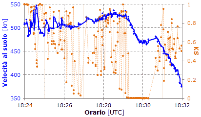
Il grafico blu mostra ciò che già sappiamo dalla pagina "
Volo in A-14": il caccia accelera per mettersi al traverso dell’IH870 (AA464 arriva a circa 530 kn rispetto al suolo).
Quello che c’interessa realmente (e anche parecchio) è il grafico arancione. Formalmente, esso rappresenta il risultato del test di Kolmogorov-Smirnov per la distribuzione normale ("K-S test, una distribuzione") applicato alle velocità medie calcolate al punto 4.
In termini informali, si potrebbe dire che quanto più grande è KS (che può variare tra 0 e 1), tanto più grande è la probabilità che le velocità calcolate al punto 4 appartengano al volo 4200. In statistica inferenziale, valori di KS (chiamati "p-value" o valori di probabilità) superiori a 0,05 o 0,1 vengono ritenuti più che sufficienti per non negare l’ipotesi da verificare e, nel nostro caso, l’ipotesi è che le velocità calcolate al punto 4 appartengono solo al volo 4200.
Fino alle 18:29:12 non si evidenzia alcuna anomalia. Tutte le velocità medie calcolate al punto 4 appartengono al volo 4200 con elevatissima probabilità e non è statisticamente possibile affermare il contrario; in altre parole, non c’è alcuna interferenza di alcun genere. I punti arancioni mostrano esattamente ciò che ci si aspetta di vedere per una variabile casuale con distribuzione normale affetta soltanto da errori casuali (gli errori del radar). Perfetto!
Poi, improvvisamente, KS si azzera e si mantiene su valori prossimi allo zero per 1m5s, fino alle 18:30:17. Ciò costituisce una fortissima evidenza statistica che i plot non sono più generati dal solo AA464, ma deve esserci un altro aereo che disturba gli estrattori dei radar.
Infine, KS ritorna a valori normali.
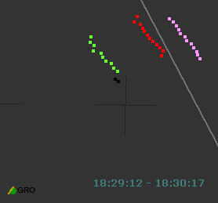
L'immagine mostra la posizione degli aerei ottenuta dall'estrattore 3 nell'intervallo di tempo indicato. Da sinistra: AA464, IH870 e IH779.
I due plot neri sono di solo primario. In basso a sinistra c'è l'aeroporto di Grosseto e il suo TACAN. La crocetta nera è centrata a 43° N, 11,5° E ed è ampia 10 x 10 nm. La linea grigia rappresenta l'asse dell'aerovia A-14.
La stessa analisi può essere effettuata per l'IH870.
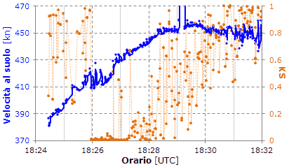
In questo caso, vediamo che l'andamento anomalo di KS inizia alle 18:25:58 e perdura fino alle 18:27:19 (con l'eccezione di 4 punti intorno alle 18:27, di cui uno è completamente coperto dal grafico blu).
Poi KS riacquista una certa variabilità, ma con valori che permangono abbastanza bassi fino alle 18:28:07, come ad indicare una significativa interferenza, anche se non evidente come in precedenza.
Anche in questo caso, come per l'AA464, deve esserci un altro aereo che disturba gli estrattori dei radar.
Il grafico relativo all'IH779 consente di escludere senza alcun dubbio che sia questo aereo ad interferire con l'IH870 dalle 18:25:58 alle 18:27:19.
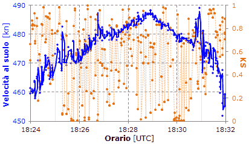
Sono presenti valori di KS relativamente piccoli e discontinui dalle 18:29:54 alle 18:30:17 che lasciano ipotizzare una lieve interferenza con un altro aereo. Questo aereo non può essere in alcun modo il caccia AA464 che si trova a 26 km dall'IH779 e i due aerei sono separati da una distanza angolare di 10 gradi rispetto all'antenna del radar Marconi.
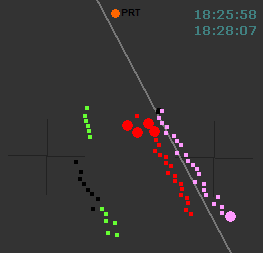
L'immagine mostra la posizione degli aerei ottenuta dall'estrattore 3 nell'intervallo di tempo indicato. Da sinistra: AA464, IH870 e IH779.
I plot neri sono di solo primario. In alto è riportato l'NDB di Peretola. La crocetta nera di destra è centrata a 43,5° N, 11,5° E ed è ampia 10 x 10 nm. La linea grigia rappresenta l'asse dell'aerovia A-14.
Il controllore si rende perfettamente conto di quanto sia ingarbugliata la situazione, tanto da richiedere all'IH870 di identificarsi (notare i plot rossi di dimensione maggiorata). Infatti, i due plot neri attaccati a quelli dell'IH779 (sembra solo uno, ma sono due) non vengono correlati dall'estrattore ai due ritorni del transponder (ritorni secondari) aventi lo stesso orario dei ritorni primari.
La situazione può essere meglio studiata sfruttando la cartina interattiva "Marconi 3" presente nella pagina "
Volo in A-14".
I controllori di Roma normalmente visualizzavano sullo schermo radar i dati provenienti dall'estrattore 1 del radar Marconi (v. "Motivazioni - Parte 1a", seconda metà di pag. 148), ma in una situazione del genere è molto probabile che si tenti di capirci qualcosa anche commutando tra i vari estrattori.
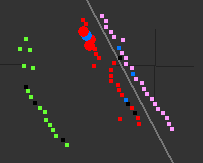
L'immagine mostra la stessa situazione precedente, ma rilevata dall'estrattore 4 del radar Selenia; peggio che con l'estrattore 3! Ci sono plot con vari codici transponder (quelli di colore blu), altri di solo primario (neri), altri ancora che si confondono tra i due DC-9, insomma, il controllore aveva il suo bel da fare.
In conclusione, parlando in termini rigorosi, un test statistico di questo tipo serve solo per non negare l'ipotesi da verificare e non può essere usato per affermare il contrario dell'ipotesi. Nel nostro caso, l’ipotesi è che le velocità calcolate al punto 4 dell'algoritmo descritto in precedenza appartengono solo al caccia AA464 (1° grafico) o solo all'IH870 (2° grafico), cioè: assenza di altri aerei che interferiscono con i ritorni radar dell'aereo considerato. Quindi, le possibili conclusioni sono:
- si rifiuta l'ipotesi di assenza di altri aerei concludendo che probabilmente sono presenti altri aerei;
- si accetta l'ipotesi di assenza di altri aerei concludendo che i dati non forniscono una sufficiente evidenza statistica per sostenere che sono presenti altri aerei.
L'ipotesi si rifiuta, nel nostro caso, quando KS è più piccolo della soglia già menzionata. Quale che sia questa soglia (che va fissata prima di condurre il test), i valori ottenuti per AA464 e per l'IH870 sono enormemente inferiori a qualunque soglia normalmente utilizzata, anche la più piccola, solitamente fissata in 0,01. Infatti i KS relativi alle finestre temporali suddette vanno da circa 0,00003 a 0,002.
Si può allora dire che le due analisi statistiche consentono di affermare che è estremamente probabile la presenza di un aereo (tanto probabile da essere quasi certa) che dalle 18:25:58 alle 18:27:19 si trova nei pressi dell'IH870 e che dalle 18:29:12 alle 18:30:17 si trova nei pressi del caccia AA464.
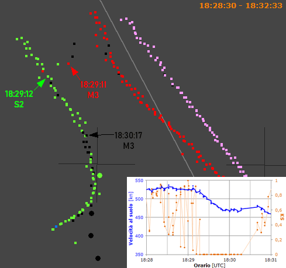
L'immagine mostra i plot registrati dall'estrattore 3 del radar Marconi (M3), dall'estrattore 2 del radar Selenia (S2) e da Poggio Ballone nell'intervallo di tempo indicato.
È piuttosto evidente la coerenza tra ciò che accade e il risultato ottenuto dall'analisi statistica. Si può notare, infatti, che un aereo inizia ad allontanarsi dall'IH870 alle 18:28:50 circa, per entrare in formazione con LL464 alle 18:29:12, proprio come risulta dall'analisi statistica.
Poi, alle 18:30:17 iniziano i plot neri, indicanti l'assenza del codice trasmesso dal transponder (probabilmente per l'impossibilità degli estrattori di correlare il plot primario col secondario).
È probabile che verso le 18:30, l'"autostoppista" abbia iniziato a scendere e quindi a non interferire più con i ritorni radar di LL464.
L'"autostoppista", infine, compare come AA041 sul radar di Poggio Ballone (plot neri circolari con SIF2 = 7777) scadendo di qualità, dileguandosi tra le colline della Toscana.
2) Analisi della quota di volo
La seguente analisi mostra l’evoluzione della quota di alcuni aerei in funzione del tempo. Riportando la quota in un grafico, è molto semplice notare i punti anomali e fare alcune ipotesi.
Iniziamo dal grafico relativo all’IH870.
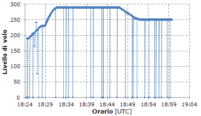
Si possono caratterizzare tre tipi di punti: 1) punti che appartengono al normale profilo di volo (nessuna anomalia); 2) punti anomali con quota pari a zero; 3) punti anomali con quota diversa da zero e non appartenenti al normale profilo di volo.
Nel grafico si vedono 4 punti anomali di tipo 3 (il primo si vede poco in un grafico così piccolo) compresi nell’intervallo 18:25:46 – 18:27:02. E’ la fase in cui AA464 (che si trova ad oltre 6 nm dal DC-9) sta per iniziare il volo in parallelo e il DC-9 sta lentamente salendo a 1300 ft/min dal livello di crociera iniziale (il 190) al 230.
L'IH779 si trova esattamente a sinistra dell’IH870, 5000 ft più in alto e la loro distanza sta aumentando da circa 2 nm a 4 nm.
Vediamo il grafico per l’IH779.
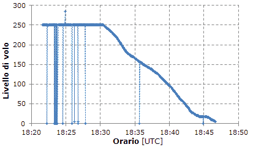
Ci sono 3 punti anomali di tipo 3, il primo dei quali si ha alle 18:24:53, momento in cui l’altro DC-9 è livellato al 190 (6000 ft più in basso) e vola circa 1 nm più avanti.
Poi ci sono 2 punti a 500 ft generati in un momento in cui c’è una sorta di "sparpagliamento" di punti nei tracciati radar, come se un terzo aereo stesse serpeggiando a destra e a sinistra dei due voli Itavia.
Per evitare di riportare tutti i 15 profili di volo analizzati, riporto la seguente tabella che li riassume:
| N | ID | Anomali | Anomalie | Percorso |
| 1 | 0225 | 1 | 5 | LND LIRF 34R da sud |
| 2 | 0227 | 1 | 175 | T/O LICJ, SOR, TEA, BOL, FRZ |
| 3 | 0444 | 1 | 14 | Forse T/O LIRN, TEA, BOL, FRZ |
| 4 | 0445 | 0 | - | Forse T/O LIRN, TEA, BOL, FRZ |
| 5 | 1133 | 3 | 285, 5, 5 | LIME - LIRA, IH779 |
| 6 | 1135 | 3 | 185, 38, 37 | PIS, GRO, CMP, LIRA |
| 7 | 1136 | 4 | 205, 165, 241, 77 | LIPE - LICJ, IH870 |
| 8 | 1137 | 0 | - | FRZ, BOL, LIRA |
| 9 | 1140 | 1 | 232 | PAR, GRO, TAQ, LIRF 16L |
| 10 | 1141 | 2 | 325, 285 | FRZ, BOL, TEA, SOR |
| 11 | 1142 | 0 | - | FRZ, BOL, TEA, CRO |
| 12 | 1143 | 1 | 119 | PAR, PIS, GRO, TAQ, LIRF 16L |
| 13 | 1145 | 1 | 280 | PAR, PIS, GRO, TAQ, LIRF 16L |
| 14 | 5350 | 2 | 77, 58 | LIRA, OST, MEDAL, BTA |
| 15 | 5357 | 2 | 192, 330 | LIRF, MEDAL, BOL, FRZ, BOA (70 s contro Sole) |
ID: codice inserito nel transponder;
Anomali: numero di punti anomali di tipo 3;
Anomalie: quote anomale;
Percorso: potrebbe sembrare una colonna un po’ criptica, ma in sostanza mostra che ho privilegiato i settori radar da nord-ovest a nord, cioè gli azimut dai radar di Ciampino in cui si trovano i punti anomali relativi all’IH870.
Si potrebbe osservare che quando vengono generati i 4 punti anomali per l’IH870, l’aereo sta volando relativamente basso, per cui la copertura del radar potrebbe non essere ottimale. Tuttavia, il grafico mostra un profilo di salita molto regolare e il tracciato al suolo non mostra niente di anomalo, anzi, i punti sono meno dispersi di quelli relativi all’IH779 (che inizialmente vola ad una quota maggiore), per cui sembra che il DC-9 si stia trovando sufficientemente all’interno del volume di copertura del radar.
Considerando che la media di punti anomali è pari a 1,3 (escludendo l'IH870), il valore pari a 4 relativo all'IH870 risulta già di per sé rilevante, se poi si considera che è l'unico aereo ad avere 4 punti anomali, la rilevanza è ancora maggiore.
3) Analisi plot SPI
La successiva analisi prende in considerazione il fatto che i voli presenti in quel tratto d’aerovia dalle 18:15 alle 18:35 dovrebbero essere solo tre, almeno in teoria (i due aerei Itavia e il caccia AA464). Allora vediamo ciò che si legge nell’estrattore 4 di Ciampino (radar Selenia).
Dopo che il controllore chiede all’IH870 di identificarsi (alle 18:26:06), nel tabulato compaiono quattro battute consecutive contraddistinte da SPI ("Special Position Indicator") che confermano la pressione del pulsante "IDENT" nel pannello del transponder del DC-9, appunto per identificarsi come richiesto dal controllore. I quattro punti appaiono così:
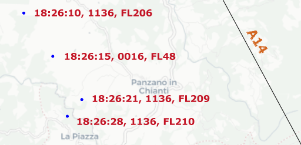
si nota che il secondo plot risulta perfettamente compatibile con la rotta seguita dal DC-9, ma non ha niente a che vedere col DC-9 (che sta salendo) né come codice inserito nel transponder né come quota (FL è il livello di volo).
Anche in questo caso, quindi, sembra possibile la presenza di un aereo che sta interferendo con il DC-9.
4) Analisi codici transponder diversi
La seguente cartina mostra tutti i plot dalle 18:15 alle 18:35 con codice del transponder diverso da 1133, 1136, 4200 e 5400, cioè non vengono visualizzati i codici assegnati ai due DC-9 Itavia e al caccia AA464.
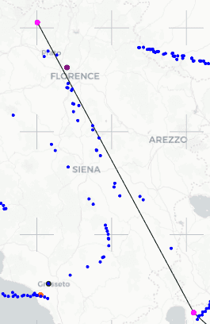
Si distinguono chiaramente le due rotte che c’interessano: quella di AA464 e quella dei due voli Itavia.
Il codice che compare più spesso è 0000 (lo abbiamo visto nei due grafici che mostrano la quota in funzione dell'orario). La rotta seguita da AA464 visualizzata nella cartina è composta soltanto da 0000.
Discorso ben diverso per la rotta seguita dai due aerei Itavia. Oltre ai soliti punti con transponder 0000, ce ne sono altri con i seguenti codici: 0016, 1130, 1132, 1137, 1331, 1537, 2431, 3522, 3737 e 5352.
I codici 1130 e 1132 sono assegnati a due aerei che si trovano in volo nell’intervallo di tempo mostrato dalla cartina (18:15 - 18:35), ma tutti gli altri codici non risultano assegnati ad alcun volo.
Sembra, dunque, molto strana l’assegnazione di tutti quei codici differenti a due aerei che hanno già assegnato 1133 (IH779) e 1136 (IH870).
5) Analisi plot consecutivi Poggio Ballone
Osservando l'orario dei plot presenti nel tabulato radar relativo a Poggio Ballone (scaricabile da STRAGI80.it), si nota un vuoto temporale dalle 18:30:19 alle 18:33:52 (3m34s).
Questa analisi prende in considerazione gli intervalli temporali tra due plot consecutivi per stabilire se il vuoto temporale possa essere ritenuto puramente casuale.
È chiaro che questo tipo di analisi non può evidenziare la presenza di un aereo vicino ad un altro, ma è molto utile per verificare se c'è stata l'intenzionalità di eliminare i plot all'interno di un intervallo temporale di una data lunghezza.
Una volta eliminate le righe con tutti 0 e le due righe con gli orari: "102408" e "119055", restano 5928 righe dalle 18:00:04 alle 19:30.
La statistica viene fatta sull'intervallo temporale tra due righe consecutive; ad esempio, siccome la seconda riga ha l'orario "180005", il primo intervallo temporale è 1 s.
L'intervallo temporale minimo è 0, mentre quello massimo è 215 s; la media è pari a 0,91 s.
Sono possibili vari test statistici, ma in questo contesto ne viene utilizzato uno molto semplice che prende in considerazione la diseguaglianza di Chebyshev.
Iniziamo con il calcolare la deviazione standard (sigma del link) dei 5927 intervalli; inserendo la formula nello stesso file excel si ottiene sigma = 2,97 s.
Usando la penultima formula del link, abbiamo che Pr(X - 0,91 ≥ 2,97 ⋅ λ) ≤ 1 / λ2. X è un intervallo temporale generico (il punto "⋅" indica una moltiplicazione) e a noi interessa calcolare la probabilità di vedere un intervallo temporale pari o superiore a 215 s, cioè: Pr(X ≥ 215), quindi si può scrivere: 2,97 ⋅ λ + 0,91 = 215, da cui si ricava λ = (215 - 0,91) / 2,97 = 72,02.
Finalmente, otteniamo: Pr(X ≥ 215) ≤ 1 / 72,022 ≤ 0,000193.
Cioè, la probabilità di trovare un intervallo temporale da 215 s in su è minore o uguale a 0,0193%. E' una probabilità talmente bassa da poter escludere quasi con certezza che quel buco temporale sia puramente casuale.
Conclusione
Sebbene le varie statistiche prese singolarmente non possono fornire la certezza della presenza di un aereo intruso, considerando nel loro complesso tutte le evidenze riportate in questa pagina, la presenza di un aereo che fa il possibile per nascondersi ai radar nel tratto Firenze – Bolsena è praticamente certa.
Non è possibile in alcun modo asserire con la stessa certezza che quell'aereo fosse proprio un MiG-23, poteva essere un qualunque altro aereo non grande e ad elevate prestazioni (quasi certamente un caccia), ma in questo sito viene sempre considerato un MiG-23 deducendolo dal ritrovamento avvenuto in Calabria (v.
"Il MiG libico rinvenuto a Castelsilano").
Nota sui test statistici
Chi non ha particolare dimestichezza con i test statistici potrebbe essere indotto a ritenerli una sorta di gioco, tipo estrazioni del lotto, ma è ovvio che così non è.
I test statistici usati in questa pagina appartengono alla statistica inferenziale, scienza che, servendosi della matematica (scienza esatta per antonomasia), perviene al calcolo di una data probabilità attraverso procedimenti la cui validità è matematicamente dimostrata.
Anche molte delle perizie messe agli atti fanno uso di test statistici, ma spesso essi si basano su ipotesi e non su dati oggettivi e certi. Un paio d'esempi tratti dalla "Perizia tecnico scientifica Misiti; parte radaristica 1a": "Peraltro potrebbe sembrare a priori più opportuno pensare un valore di σ = 1 m2 [...]" (pag. 55), "La distribuzione dei vari possibili plots, ritenendo la probabilità di falso allarme pari a Pfa∼10-5" (pag. 57). In questi casi, le probabilità calcolate sono vere solo se le ipotesi di partenza sono vere, ma nessuno può affermarlo con certezza.
I test presentati in questa pagina, invece, si basano su dati oggettivi reali e concreti; per tale motivo, le relative probabilità calcolate sono matematicamente esatte. Ciò deve essere tenuto nella giusta considerazione se si vogliono trarre le giuste conclusioni.